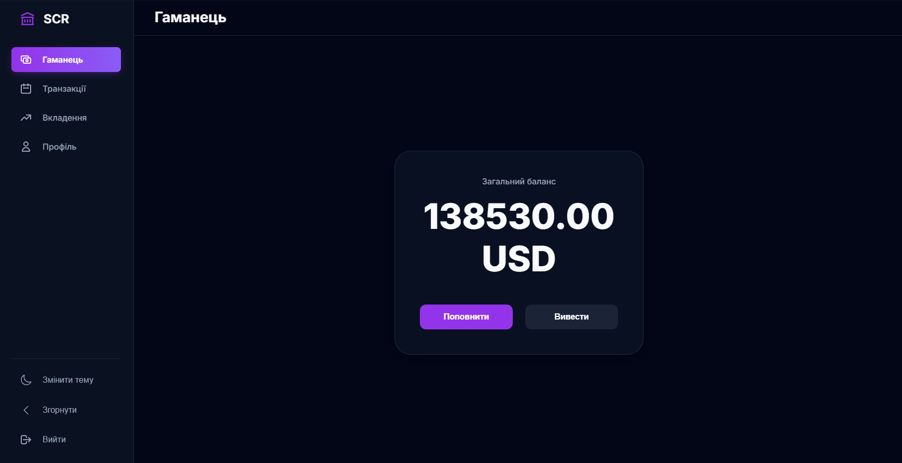

SCR network
Проект був розроблений як система вкладеннь, дуже розвинута панель андміністратора.
Детальніше
Назва проекту 2
Дуже короткий опис, що розкриває головну суть та ідею цього дивовижного проекту.
Детальніше
Назва проекту 3
Дуже короткий опис, що розкриває головну суть та ідею цього дивовижного проекту.
Детальніше